第11章 腹膜后间隙及肾上腺
原书页 343–354 · 12 个页面区块 · 15 张配图。正文、图注与图片保持原书顺序。
| · AA | abdominal aorta | 腹主动脉 |
| · AG | adrenal gland | 肾上腺 |
| (SAG) | (suprarenal gland) | |
| · Ao | aorta | 主动脉 |
| · Au | antrum | 胃窦 |
| · CA | celiac artery | 腹腔动脉 |
| · CHA | common hepatic artery | 肝总动脉 |
| · CHD | common hepatic duct | 肝总管 |
| · DA | descending aorta | 降主动脉 |
| · Dia | diaphragm | 膈肌 |
| · Du | duodenum | 十二指肠 |
| · E | esophagus | 食管 |
| · GB | gallbladder | 胆囊 |
| · HA | hepatic artery | 肝动脉 |
| · IVC | inferior vena cave | 下腔静脉 |
| (LAG) | (left suprarenal gland) | |
| · LK | left kidney | 左肾 |
| · LL | left liver lobe | 肝左叶 |
| · LRA | left renal artery | 左肾动脉 |
| · LRV | left renal vein | 左肾静脉 |
| · P | pancreas | 胰腺 |
| · PB | pancreatic body | 胰体 |
| ·PH | pancreatic head | 胰头 |
| ·PHA | proper hepatic artery | 肝固有动脉 |
| ·Ps | psoas | 腰大肌 |
| ·PT | pancreatic tail | 胰尾 |
| ·PV | portal vein | 门静脉 |
| ·RA | renal artery | 肾动脉 |
| ·RAG | right adrenal gland | 右侧肾上腺 |
| ·RK | right kidney | 右肾 |
| ·RL | right liver lobe | 肝右叶 |
| ·RPV | right portal vein | 门静脉右支 |
| ·RRA | right renal artery | 右肾动脉 |
| ·RRV | right renal vein | 右肾静脉 |
| ·RV | renal vein | 肾静脉 |
| ·SA | spleen artery | 脾动脉 |
| ·SMA | superior mesenteric artery | 肠系膜上动脉 |
| ·SMV | superior mesenteric vein | 肠系膜上静脉 |
| ·Sp | spine | 脊椎 |
| ·SP | spleen | 脾 |
| ·SpA | splenic artery | 脾动脉 |
| ·SpV | splenic vein | 脾静脉 |
| ·St | stomach | 胃 |
一、 腹膜后间隙
腹膜后间隙为一个潜在的大间隙，上界为横膈，下界为盆膈，侧界相当于双侧第十二肋间至髂嵴的垂直线。间隙的前面为壁腹膜、右肝裸区、十二指肠、升结肠以及直肠的腹膜后部分。间隙的后面为后腹壁、腰大肌、腰方肌。腹膜后间隙的主要内容物有腹主动脉、下腔静脉及它们的一些重要分支、胰腺、部分十二指肠、肾上腺、肾及输尿管等；神经有交感神经干、节，以及脊椎神经；淋巴结及淋巴管。其前方为腹腔，阻力很小，所以出血和感染很易大面积的扩散，肿瘤也可快速生长。
由于是潜在的间隙。超声探查不能直接显示，需依靠腹膜后脏器和血管以及脏器间的毗邻位置进行定位，在腹部自上而下横向扫查。从侧腰部纵向或横向扫查。且由于间隙前有胃肠等脏器的气体干扰，一般情况下，用胰腺或肾作透声窗。
（一） 上腹部经胰腺上缘横切面（图11-1）
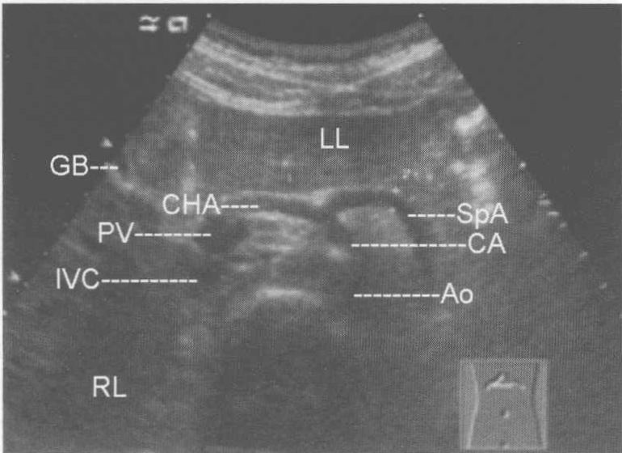
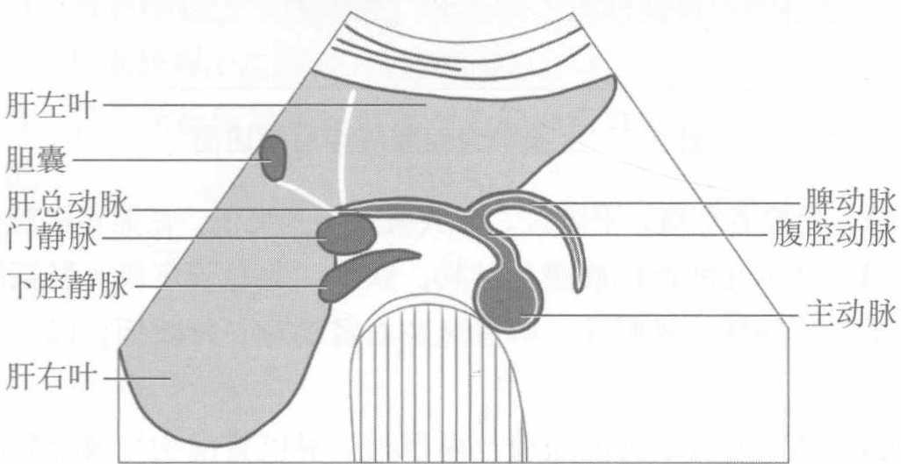
图11-1 上腹部经胰腺上缘横切面
【探查方法】受检者空腹，平卧位，探头横置于剑突下，在显示胰腺横断面后，探头略向上移于胰腺上缘，声束指向后上方，显示肝动脉及脾动脉长轴断面。【断面结构】显示上腹腹膜后结构。腹腔动脉、肝总动脉及脾动脉长轴断面，胰腺上缘横断面。腹主动脉及下腔静脉的横断面。
【临床价值】腹腔动脉位于腹膜后，上腹部腹膜后病变位于其周围。胆系、胃肠等肿瘤的转移、淋巴瘤等导致的上腹腹膜后淋巴结肿大，均可以在此切面显示。
（二） 上腹部经胰腺腹膜后横切面（图11-2）
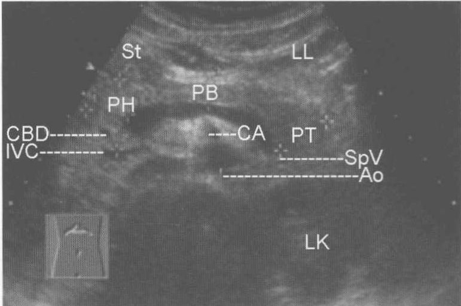
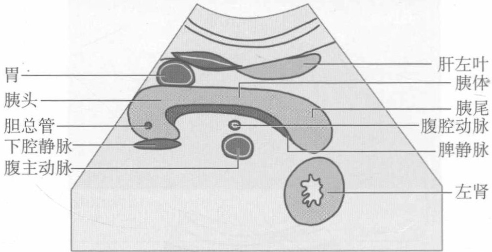
图11-2 上腹部经胰腺腹膜后横切面
【探查方法】受检者空腹，平卧位，探头横置于剑突下，在显示胰腺横断面后。
【断面结构】显示此断面的腹膜后结构。胰腺、胆总管下段、肠系膜上动脉、腹主动脉及下腔静脉的横断面。脾静脉及右肾动脉长轴断面。以上结构均位于腹膜后。
【临床价值】胰腺及其后方的血管及淋巴结、淋巴管结构均属于腹膜后间隙。其周围的病变均来自上腹部腹膜后，包括淋巴结肿大、占位性病变、积液等。
（三） 左上腹膜后横断面（图11-3）
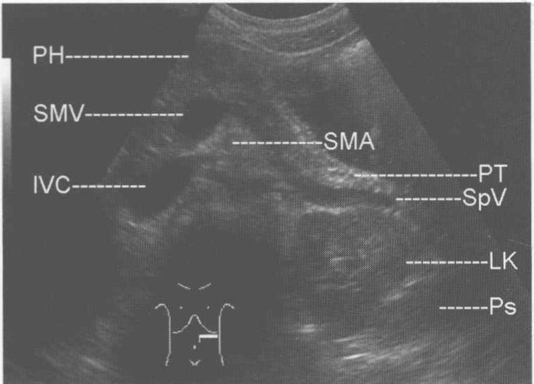
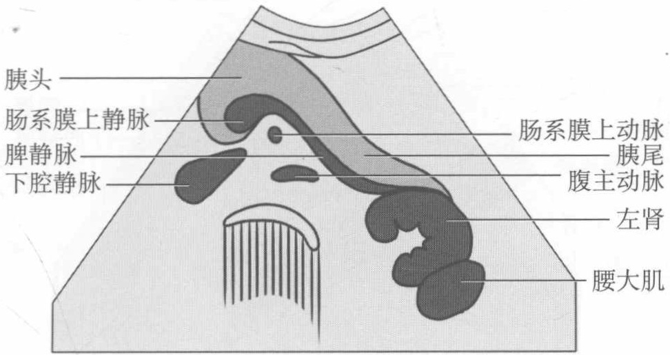
图11-3 左上腹膜后横断面
【探查方法】受检者空腹，平卧位，探头横置于左上腹部横向扫查。
【断面结构】腹主动脉、下腔静脉、肠系膜上动脉及静脉的横断面，胰体尾长轴断面，左肾横断面，左侧腰大肌横断面。
【临床价值】以上断面所显示的脏器均为腹膜后器官，在其周围的病变均为腹膜后病变。
（四） 右上腹膜后横切面（图11-4）
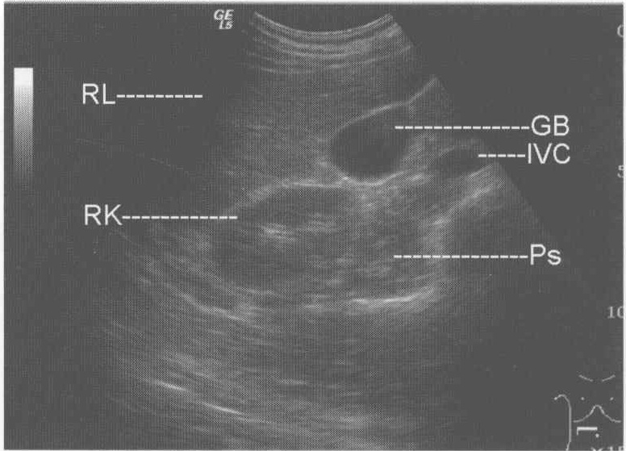
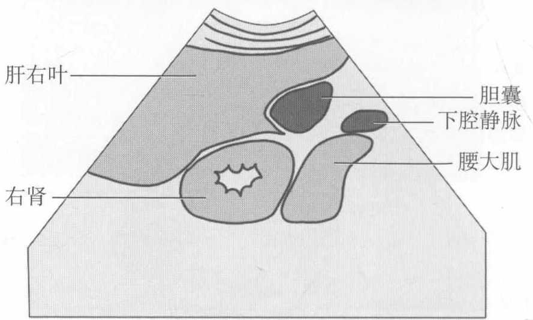
图11-4 右上腹膜后横切面
【探查方法】受检者空腹，平卧位，探头横置于右上腹部横向扫查。
【断面结构】显示位于腹膜后的下腔静脉、右肾及右侧腰大肌横断面。
【临床价值】位于右肾及右侧腰大肌周围的病变均为腹膜后病变。此切面还可显示位于右上腹腔内肝肾之间的病变，如占位性病变可引起肝肾分离。肝肾之间为肝肾隐窝。平卧位时位置最低，腹腔液体可以集中于肝肾之间即肝肾隐窝处腹腔。
（五）经腹主动脉长轴腹膜后纵断面（图11-5）
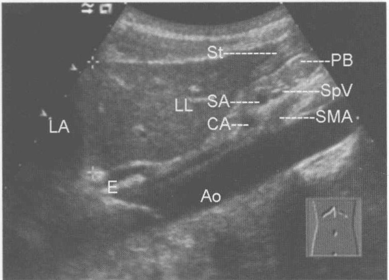
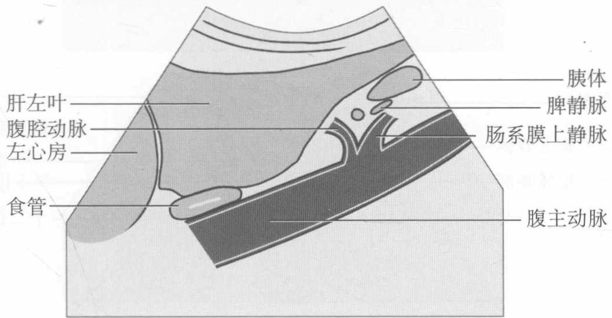
图11-5 经腹主动脉长轴腹膜后纵断面
【断面结构】腹主动脉、腹腔动脉及肠系膜上动脉纵断面。肝左叶纵断面。
【探查方法】受检者空腹，平卧位，探头纵置于上腹部纵向扫查。
【临床价值】腹主动脉、腹腔动脉及肠系膜上动脉均位于腹膜后。在上述血管周围的病变均属于腹膜后病变。肠系膜上动脉和腹主动脉之间的夹角很小，上腹腹膜后淋巴结肿大可使此夹角抬高。
（六） 上腹腹膜后横切面（图11-6）
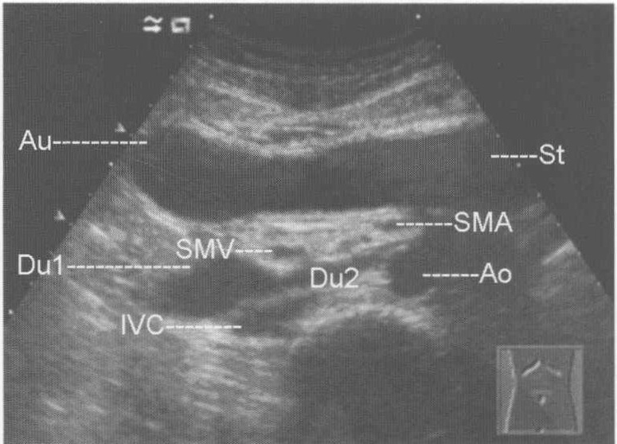
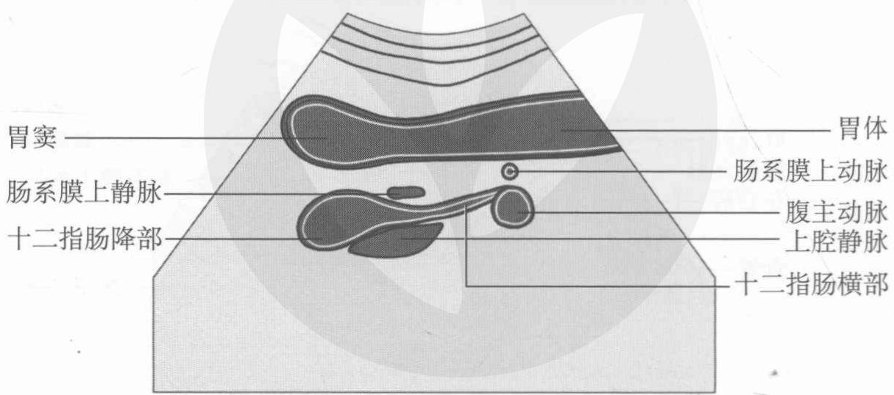
图11-6 上腹腹膜后横切面
【探查方法】受检者空腹，平卧位，探头横置于剑突下，在显示胰腺横断面后探头向下滑动于脐上水平扫查。
【断面结构】肠系膜上动脉、腹主动脉及下腔静脉的横断面。此切面图为饮水后充盈胃及十二指肠后所做，所以还可以显示位于腹膜后的十二指肠降部横断面及十二指肠横部的长轴断面。
【临床价值】以上结构有助于判断病变是否位于上腹部腹膜后，包括淋巴结肿大、占位性病变、积液等。
二、 肾上腺
（一） 经右肋间或右肋缘下右肾上腺纵切面（图11-7）
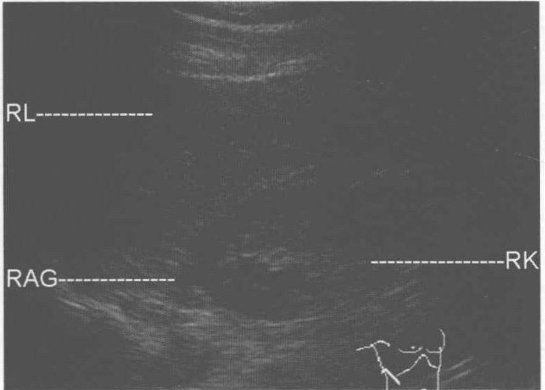
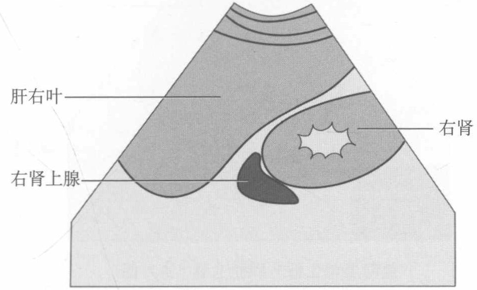
图11-7 经右肋间或右肋缘下右肾上腺纵切面
【探查方法】受检者最好空腹，左侧卧位，探头斜置于右侧腋前线或腋前线和腋中线之间的第9～11肋间，显示出肝右后叶及右肾冠状切面后，以肝脏作透声窗，声束向右肾上腺的内上方扫查。显示下腔静脉斜断面后肾上腺位于其后外侧。
【断面结构】右肾上腺位于右肾上腺的内上方，中部断面呈三角形的低回声区，只扫查到上部或一侧则显示为“月牙形”。附着于肾上腺。其左侧为下腔静脉的斜断面。
【测量方法及正常值】测长径及厚径。正常值长径： 3.3 ± 0.14cm，厚径： 0.73 ± 0.18cm。
【临床价值】诊断右肾上腺肿大、占位性病变等。
【附注】受患者胖瘦、腹腔气体多少及医师的技术熟练程度的影响，肾上腺的显示率不是100%。若在此切面显示不够清晰可以选用仰卧位或俯卧位探查。超声检查不是检查肾上腺的最佳影像学方法。
（二） 经左肋间左肾上腺纵切面（图11-8）
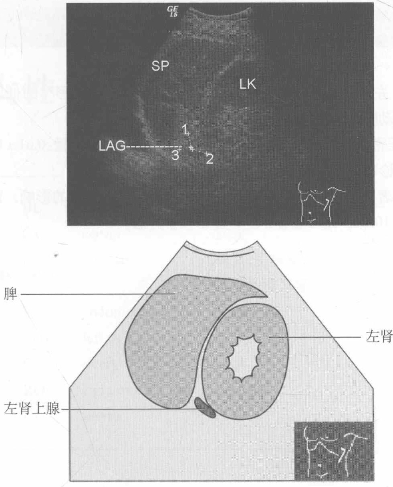
图11-8 经左肋间左肾上腺纵切面
【探查方法】受检者最好空腹，右侧卧位，探头斜置于左侧腋前线或腋前线和腋中线之间的第9～11肋间，显示出左肾冠状切面后，以脾脏作透声窗，声束向左肾上腺的内上方扫查。可以饮水用胃作透声窗。若在此切面显示不够清晰，可以选用仰卧位或俯卧位探查。显示腹主动脉斜断面后，肾上腺位于其后外侧。
【断面结构】左肾上腺位于左肾上腺的内上方，呈“月牙形”的低回声区，其右侧为腹主动脉的斜断面。
【测量方法及正常值】测长径及厚径，长径： 2.29 ± 0.11cm，厚径： 0.61 ± 0.15cm。
【临床价值】诊断左肾上腺肿大、占位性病变等。
【附注】受患者胖瘦、腹腔气体多少及医师的技术熟练程度的影响，肾上腺的显示率不是100%。超声检查不是最佳影像学方法。
（张梅）